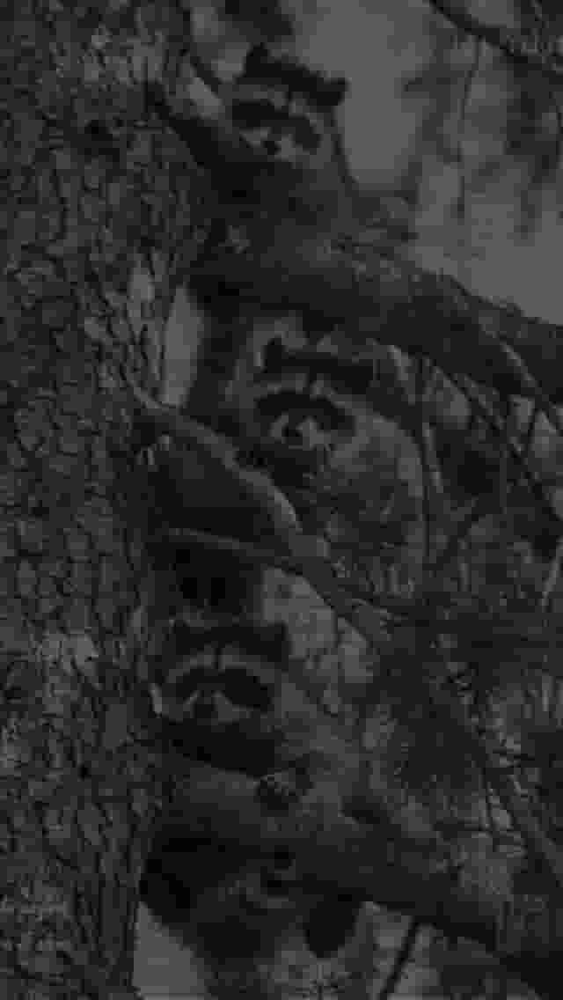

Tvättbjörnsnätväg

浣熊網路
一个由普通浣熊和能变成类人状态的浣熊们建立的神奇组织。
没有运行任何以盈利为目的的项目，浣熊们的核心工作只是偷窥其他生物生活中的喜怒哀乐，并将偷窥到的内容客观地记录下来——虽然也偶有因主观心绪影响而做出的邪恶造谣行为，但一群善良的小浣熊又能造谣什么过分的内容呢？而除去经常偷窃人类食物、经常在人类房屋上打洞破坏房屋结构这些行为外，它们没有任何危险性。
关于浣熊
🦝 Silvanus Tvättbjörn（席尔维诺思·特维特比约恩）：浣熊网络总负责浣兼吉祥物。一只经典款灰色浣熊，栖居于世界各地人类的图书馆与影像店之下。不能变成类人，永远毛茸茸。
🦝 Silvanus Ink（席尔维诺思·音克）：浣熊网络所有文字编辑工作的负责浣熊。一只有着蓝色和紫色杂毛的经典款灰色浣熊，与某些莫名其妙的超自然现象有所关联。可以变成类人。
🦝 Silvanus Elm（席尔维诺思·艾尔姆）：浣熊网络埃尔姆市（Elm City）及周边区域的负责浣熊。一只有着奇特的枯榆树叶状光秃秃肉感尾巴的经典款灰色浣熊。可以变成类人。
🦝 Silvanus Snø（席尔维诺思·斯诺）：浣熊网络北欧某几个城市及周边区域的负责浣熊。一只少见的纯白色浣熊，视力欠佳，患有雪盲症。可以变成类人。
联系方式
邮箱：1467665955@qq.com
你可以称呼掌握此邮箱的浣熊为：Silvanus / 席 / 重生 / 乌龙茶 / 阿景 / 浣熊